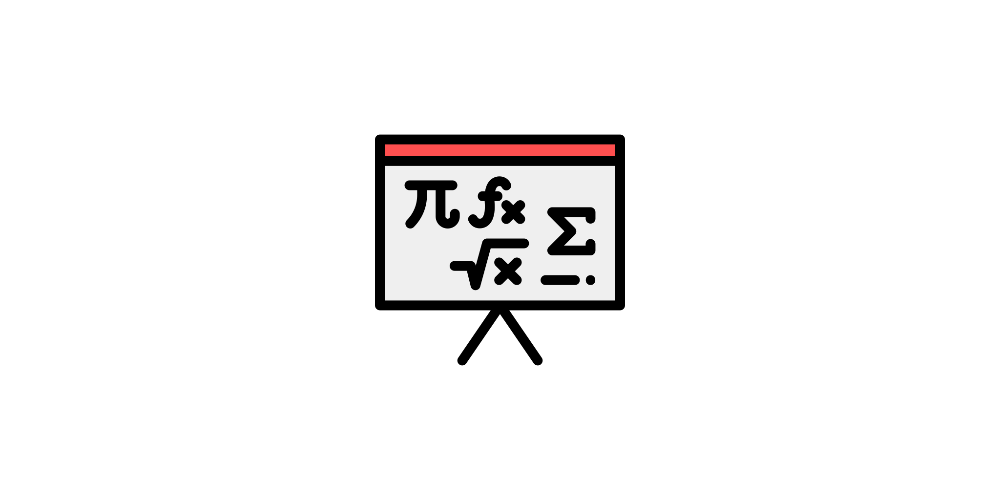

Welcome to pyzernike’s documentation!#
pyzernike computes, fits and displays the Zernike polynomials, on the unit disk and on elliptic annuli
(off-axis pupils, telescopes with a central obscuration, …), with numpy only.
The Zernike polynomials are defined on the unit disk for \(|m| \leq n\) and \(n - m\) even by:
where \(n\) is the radial order, \(m\) is the azimuthal frequency, \(\rho\) is the normalized radial coordinate (\(0 \leq \rho \leq 1\)) and \(\theta\) is the azimuthal angle.
Features#
Polynomials and derivatives of any order, with exact integer coefficients, in polar coordinates or in Cartesian coordinates on an elliptic annulus (shifted, scaled and rotated ellipse with an optional central hole). The Cartesian derivatives are exact, also at the center of the pupil.
Accuracy at high orders: all the polynomials up to an order are computed with a stable recurrence relation, accurate to the machine precision at any order.
Conventions: OSA/ANSI, Noll and Fringe indexings, and normalization of Noll.
Coefficients: evaluation of a sum of polynomials and of its derivatives, conversion between the conventions, rotation and change of pupil (scaling and decentering), RMS, peak-to-valley and Strehl ratio.
Fitting: linear least squares fit of sampled data, and residual and Jacobian functions to estimate the position and the size of a pupil with any least squares solver.
Optional features: symbolic expressions (
sympy) and display in static or interactive figures (matplotlib).
Quick start#
pip install pyzernike-polynomials
Fit a wavefront sampled on a grid and evaluate its RMS:
import numpy
import pyzernike
x, y = numpy.meshgrid(numpy.linspace(-1, 1, 201), numpy.linspace(-1, 1, 201))
rho, theta = numpy.hypot(x, y), numpy.arctan2(y, x)
wavefront = 0.3 * pyzernike.zernike_polynomial(rho, theta, n=2, m=0) # NaN outside the unit disk
coefficients = pyzernike.zernike_fit(rho, theta, wavefront, order=4, normalize=True)
print(pyzernike.zernike_rms(coefficients, normalize=True))
Contents#
Installation
This section describes how to install the package into a Python environment with pip, and how to
install the optional dependencies for the display (matplotlib) and the symbolic expressions (sympy).

Mathematical description
This section describes the mathematics behind the package: the definitions and the conventions of the Zernike polynomials, their computation, their extension to an elliptic annulus, the operations on their coefficients and the least squares fits.
API Reference
The reference guide contains a detailed description of the functions included in pyzernike. The
reference describes how the functions work and which parameters can be used. It assumes that you have an
understanding of the key concepts.
Examples Gallery
This section contains a collection of examples demonstrating how to use the package for various applications (wavefront analysis, alignment of a pupil, distortion of a sensor, …). Each example includes a description of the problem being solved, the code used to solve it, and the resulting output.
Command line#
The command pyzernike opens an interactive window to explore the Zernike polynomials and their derivatives
on the unit disk, and pyzernike --xy on an elliptic annulus (matplotlib is required):
pyzernike
pyzernike --xy

License#
The package is distributed under the Apache License 2.0: see the LICENSE file of the repository.